Geclustertes und gestapeltes Säulendiagramm
ClusteredStack-ColumnGraph
Zusammenfassung
Dieses Tutorial zeigt Ihnen, wie Sie ein geclustertes und gestapeltes Säulendiagramm in Origin erstellen. Dieses Diagramm besteht aus zwei Diagrammlayern, von denen jeder eine gestapelte Säule enthält.
-
- 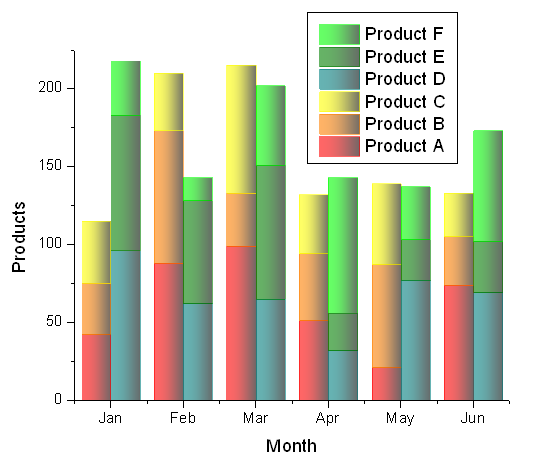
Origin-Version mind. erforderlich: Origin 8.5.1 SR0
Was Sie lernen werden
Dieses Kapitel zeigt Ihnen, wie Sie:
- ein gestapeltes Säulendiagramm erstellen.
- ein Diagramm, das zwei gestapelte Säulendiagramme enthält, erstellen.
- ein Säulendiagramm benutzerdefiniert anpassen.
Schritte
 |
Ab Version 2015 unterstützt Origin das Festlegen von Teilgruppen für mehrere gestapelte Säulendiagramm in einem Layer. Es ist einfacher, die gruppierten gestapelten Säulendiagramme zu zeichnen. Bitte lesen Sie dieses Tutorial: Gruppierte Stapeldiagramme.
|
- Importieren Sie die Beispieldaten Data 1 und Data 2 in unterschiedliche Arbeitsblätter in Origin. Setzen Sie die erste Zeile jeweils als Langname und benennen Sie die Blattnamen als 2010 bzw. 2011.
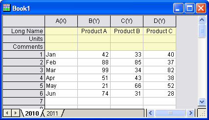
- Erstellen Sie einen neuen Diagrammlayer durch Auswahl von Datei: Neu: Diagramm im Hauptmenü. Wählen Sie dann Einfügen: Neuer Layer (Achsen): Keine Achsen (Verknüpfte XY-Skala und Dimension) im Hauptmenü, um einen weiteren Layer zu dem Diagrammfenster, das Sie gerade erstellt haben, hinzuzufügen.
- Wählen Sie Grafik: Setup Diagramm im Hauptmenü, um den Dialog Diagrammeinstellungen zu öffnen. In diesem Dialog wählen Sie Säulen/Balken im Feld Diagrammtyp, dann das Arbeitsblatt 2010 bzw. 2011 im oberen Bedienfeld, weisen die Spalte col(A) als X und Spalte col(B) bis col(D) als Y im mittleren Bedienfeld zu und klicken anschließend auf die Schaltfläche Hinzufügen, um sie zu Layer 1 bzw. Layer NoAxes hinzuzufügen.
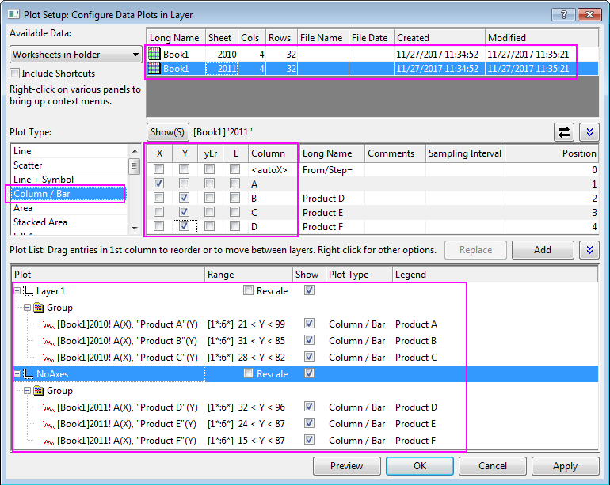
|
Um alle drei Bedienfelder im Dialog Diagrammeinstellungen anzuzeigen, erweitern Sie bitte das Bedienfeld Diagrammtyp, indem Sie auf klicken, und erweitern Sie das Bedienfeld Verfügbare Daten, indem Sie erneut auf klicken.
Bitte lesen Sie unter Mit Hilfe des Dialogs Diagrammeinstellungen zeichnen weitere Informationen zu diesem Thema.
|
- Klicken Sie auf OK, um den Dialog Diagrammeinstellungen zu schließen. Klicken Sie auf die Schaltfläche Neu skalieren. Sie erhalten ein Diagramm mit zwei gestapelten Säulendiagrammen, die sich, wie unten zu sehen, überschneiden:
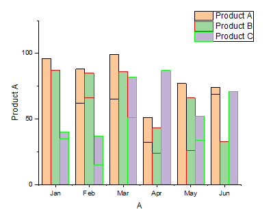
- Klicken Sie zum Öffnen des Dialogs Details Zeichnung doppelt auf das Diagramm. Wählen Sie Layer1 im linken Bedienfeld, wechseln Sie zur Registerkarte Stapeln im rechten Bedienfeld und wählen Sie die Option Kumulativ. Wählen Sie die Ebene NoAxes und nehmen Sie die gleiche Einstellung vor.
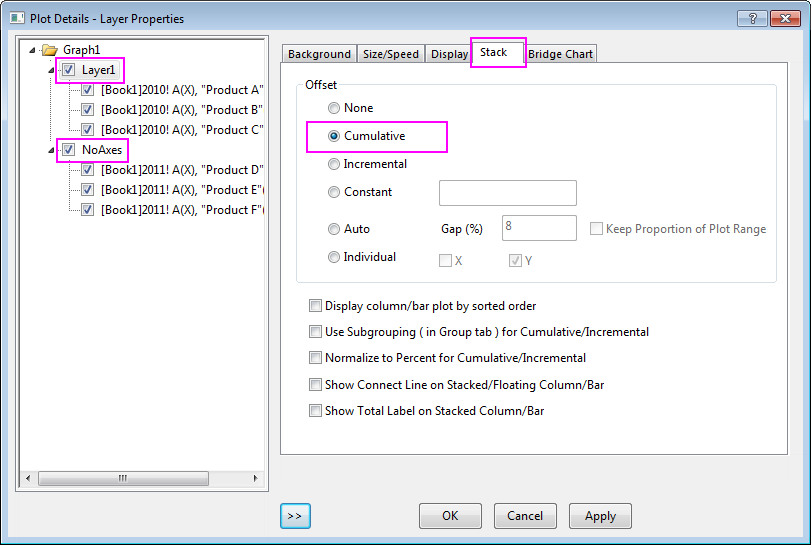
- Wählen Sie die Ebene Graph1 im linken Bedienfeld, wechseln Sie zur Registerkarte Allgemeines im rechten Bedienfeld und aktivieren Sie das Kontrollkästchen Säulen/Balkenabstand/Verschiebung über Layer.
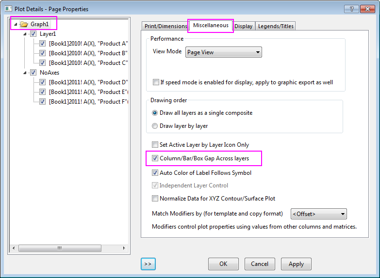
- Klicken Sie auf die Schaltfläche OK. Das Diagramm hat zwei gestapelte Säulen, die nebeneinander mit einem automatischen Abstand angezeigt werden.
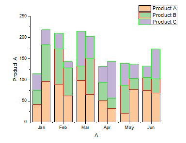
- Klicken Sie zum Öffnen des Dialogs Details Zeichnung doppelt auf das Diagramm. Legen Sie die Randfarbe bzw. Füllfarbe wie im folgenden Bild zu sehen fest:
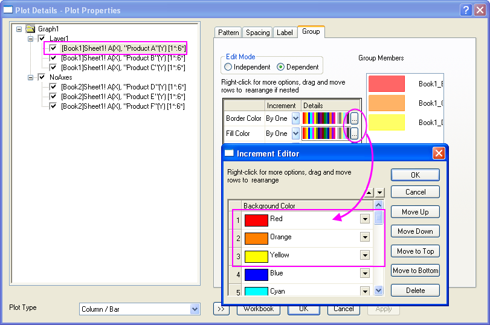
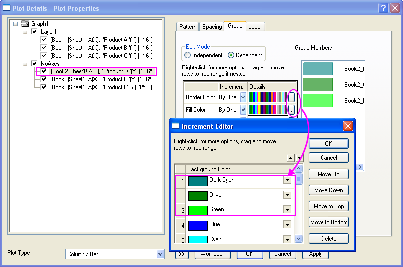
- Wechseln Sie zur Registerfarbe Muster, um die Transparenz auf 40, die Randbreite auf 0,2 und die Gradientenfüllung, wie für beide Diagrammlayer gezeigt, festzulegen:
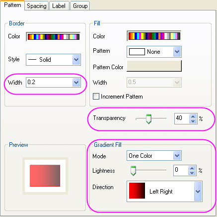
- Bestätigen Sie mit OK, um den Dialog Details Zeichnung zu schließen.
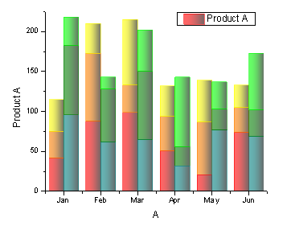
- Klicken Sie mit der rechten Maustaste auf die Diagrammlegende und wählen Sie Legende aktualisieren im Kontextmenü, um den Dialog LegendUpdate zu öffnen. Setzen Sie den Aktualisierungsmodus auf Rekonstruieren, die Legende auf Eine Legende für alle, die Ordnung des Layers auf Absteigend und die Zeichnungsreihenfolge innerhalb des Layers auf Aufsteigend.
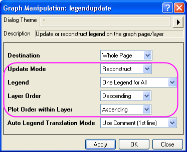
- Klicken Sie auf die Schaltfläche OK, um den Dialog zu schließen und aktualisieren Sie dann die Achsenbeschriftungen. Das endgültige Diagramm sieht aus wie unten zu sehen:
Beispieldaten
Data 1
|
Product A |
Product B |
Product C |
| Jan |
42 |
33 |
40 |
| Feb |
88 |
85 |
37 |
| Mar |
99 |
34 |
82 |
| Apr |
51 |
43 |
38 |
| May |
21 |
66 |
52 |
| Jun |
74 |
31 |
28 |
Data 2
|
Product D |
Product E |
Product F |
| Jan |
96 |
87 |
35 |
| Feb |
62 |
66 |
15 |
| Mar |
65 |
86 |
51 |
| Apr |
32 |
24 |
87 |
| May |
77 |
26 |
34 |
| Jun |
69 |
33 |
71 |